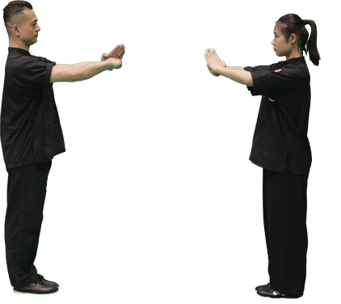
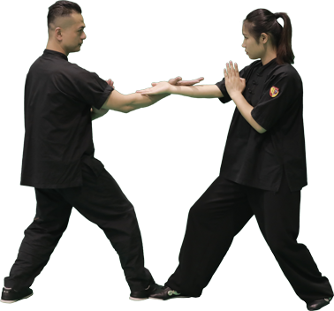

詠春拳单黐手比赛
詠春拳单黐手是一项运用詠春拳基本动作，以借力御力、守中用中、攻防兼备为主要内涵的文雅的武术对抗运动。以守正为主要方法和精神追求，通过控制自己的身体、感受对手的力量、利用对手的力量，从而破坏对手的重心，打击并战胜对手。通过参与本项目，可以帮助了解自己、提升自我控制能力、完善自我从而击败对手
单黐手内容
1. 单黐手对抗比赛场地
比赛场地为直径3米的圆形场地，场地正中设有边长为25厘米的正方形。
2. 单黐手比赛时间
每场比赛分三局，每局2分钟，局间休息30秒。
3. 单黐手比赛礼仪
（1）每一局、每一场比赛开始和结束时，运动员互行抱拳礼。
（2）每一场比赛开始和结束时，双方运动员向裁判员、教练员、观众行抱拳礼

4. 单黐手预备姿势——“上步搭手”
（1）动作说明
双方行“抱拳礼”之后，对侧脚向前上一步，双方脚外侧相抵，运动员左右脚斜45°平行，同时双方运动员对侧手互搭（摊掌）。
（2）动作要点
①运动员左右脚斜45°平行；
②运动员双方脚外侧相抵；
③运动员双方搭手成摊掌。

5. 单黐手对抗方法
（1）双方运动员须在场地内，两脚外侧相抵于场地正中的正方形内，双手互搭（摊掌）。
（2）根据詠春拳的攻防原理，采用詠春拳的攻防招式和攻防动作（日子穿心拳、正掌、反铲掌、正铲掌、底掌、撑掌、摊掌、单膀手、圈手、圈马等）进行比赛。
（3）比赛期间双手不得分开超过1秒。
（4）整个比赛中双方运动员不得后退，双脚不得移动（只允许向前上1步）。
3. 单黐手规则
（1）得1分：有效击打到对方的有效得分部位得1分、劝告一次对方的1分。
（2）得2分：把对方打到场外；利用有效方法把对方摔倒；警告一次对方得2分。
（3）不得分：没有有效击打（对方没有反应如护具声音、身体晃动、后退）；没有打到有效部位（有效部位如头部、躯体；无效部位如四肢；禁击部位如后脑、眼睛、裆部）。
（4）犯规：技术犯规（比赛中场外进行指导、对裁判员不礼貌或不服从判罚、比赛中大喊大叫、不带护具、不遵守礼节）；侵人犯规（在开始前或喊停后进攻对方、击打到禁击部位、手分开超过1秒、双脚连续上步或移动、后退、采用非詠春拳的技术动作）。
（5）罚则：每出现一次技术犯规劝告一次；每出现一次侵人犯规警告一次。
（6）胜负判定：采取三局两胜制。每一局中得分高者胜，如若平局，则按受警告少者为胜方、劝告少者为胜方、体重轻者为胜方、出场地次数少者为胜方、被摔倒次数少者为胜方的顺序判定每局胜负，如若再平局，进行加时赛，直至分出胜负。